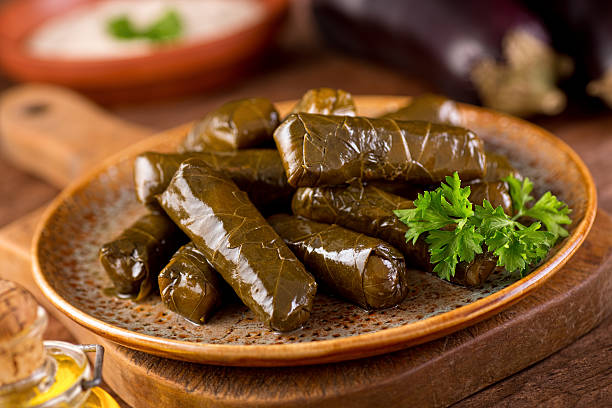

Home
Dolma

Description
These dolmas are made with what may seem like a strange combination of spices,
but this is a wonderful, delicate
traditional Turkish dish with a twist.
They are traditionally served chilled, but you can serve them warm if desired.
Squeeze fresh lemon juice over
them before serving.
Ingredients
- 1 tablespoon olive oil
- 2 onions, minced
- 1 ½ cups uncooked white rice
- 1 ½ cups hot water, or as needed to cover
- 2 tablespoons tomato paste
- 2 tablespoons dried currants
- 2 tablespoons pine nuts
- 1 tablespoon ground cinnamon
- 1 tablespoon dried mint
- 1 tablespoon dried dill weed
- 1 teaspoon ground allspice
- 1 teaspoon ground cumin
- 1 (8 ounce) jar grape leaves, drained and rinsed in warm water
Steps
- Heat oil in a medium saucepan over medium heat. Add onions and sauté until tender, about 5 minutes. Stir in
rice, then add enough hot water to cover. Cover and simmer until rice is halfway cooked, about 10 minutes.
- Remove from the heat and stir in tomato paste, currants, pine nuts, cinnamon, mint, dill, allspice, and
cumin. Let mixture cool, about 15 minutes.
- Prepare a large pot by placing an inverted plate on the bottom; this will protect the dolmas from direct
heat during steaming.
- Cut off and discard any grape leaf stems. Place about 1 teaspoon cooled rice mixture into the center of a
leaf. Fold in the sides, then roll into a cigar shape. Place into the prepared pot. Repeat to make remaining
dolmas.
- Pour in just enough warm water to reach the bottom of the first layer of dolmas. Cover and simmer over low
heat for 30 to 45 minutes, or until rice is totally cooked. Check the water level often and add more as
necessary.